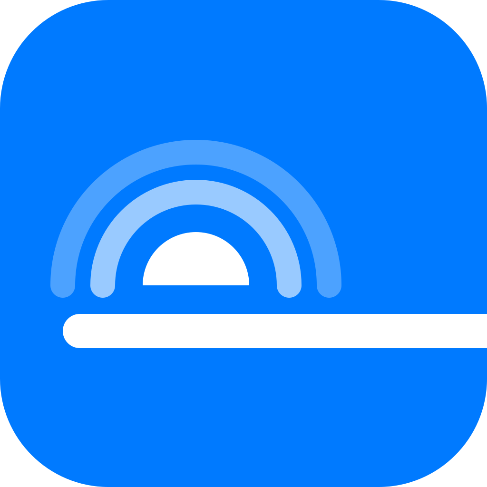

Receber a tela
Este navegador é antigo demais para receber a tela. No iPad ou iPhone, precisa do iOS 15.4
ou mais novo (Ajustes, Geral, Sobre).
This browser is too old. iOS 15.4 or later is
required.
Toque em Conectar.
Para tela cheia, adicione à Tela de Início.